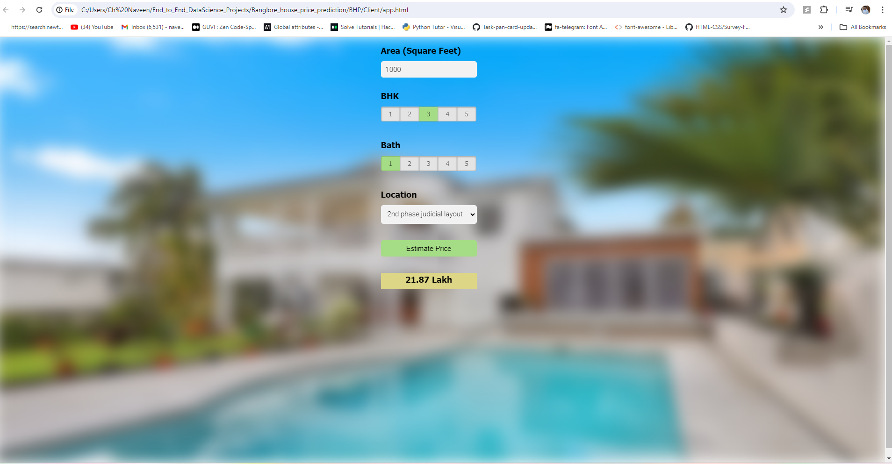

End to End Restaurent Chatbot Using DialogFlow
In a world where technology shapes the way we interact with services, imagine a seamless dialogue with a chatbot that not only takes your food orders but understands your cravings. Welcome to the future of food delivery systems, where we embark on a transformative journey to build a restaurant chatbot from the ground up..


Embark on a journey through an end-to-end machine learning project focused on classifying images of renowned sports celebrities. Explore the business requirements and objectives, and take on the challenge of classifying images of my top 5 favorite sports icons
In this project, I delved into the fascinating world of data analysis and model building, leveraging real-world data to construct a robust predictive model.Once the model was ready, I seamlessly integrated it into a user-friendly web interface using Streamlit, allowing users to interact with the model and explore predictions with ease.
In this project, I utilized advanced machine learning techniques to develop predictive models for forecasting weather patterns in Australia. By analyzing extensive historical weather data and incorporating key meteorological factors, such as temperature, humidity, wind speed, and precipitation, I aimed to create accurate forecasts that would aid various stakeholders in making informed decisions.
Harnessing the power of Convolutional Neural Networks (CNNs), we'll develop an image classification model capable of detecting diseases in potato plants with high accuracy. The ultimate goal is to build a user-friendly mobile application that enables farmers to identify plant diseases simply by taking a picture, facilitating timely intervention and crop management..

In this project, we cover various data science concepts, including data loading and cleaning, outlier detection and removal, feature engineering, dimensionality reduction, gridsearchcv for hyperparameter tuning, and k-fold cross-validation. We utilize a range of technologies and tools.

Our goal is to develop a predictive model capable of accurately assessing the quality of wine based on various physicochemical properties and sensory attributes. By analyzing a rich dataset encompassing factors such as acidity, alcohol content, residual sugar, and more, we aim to provide valuable insights to winemakers and enthusiasts alike.